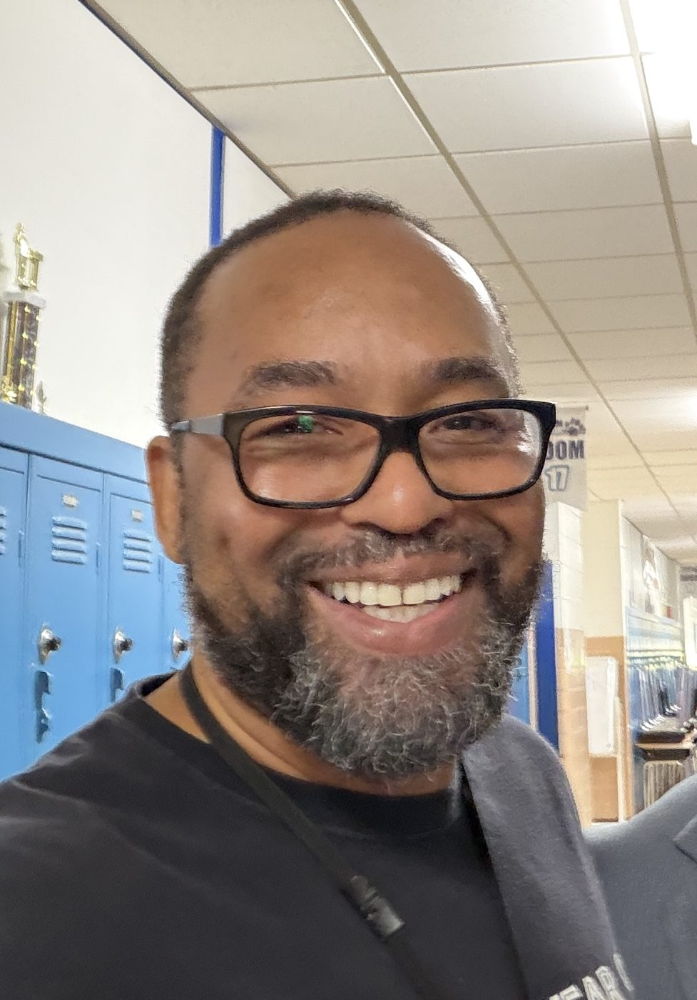
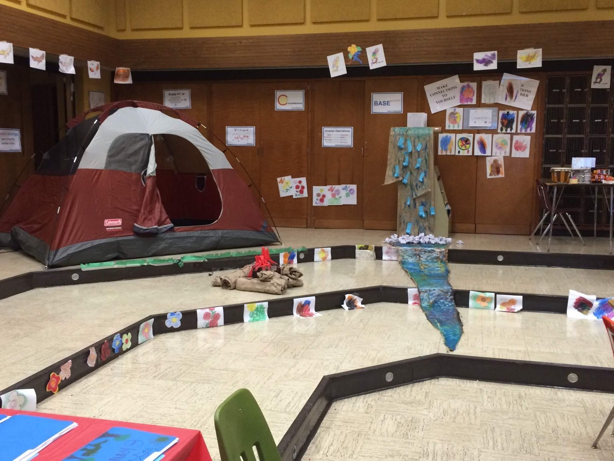
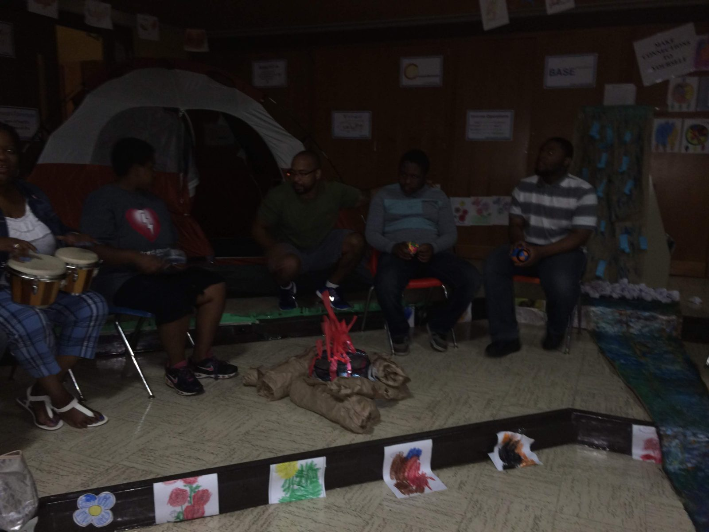
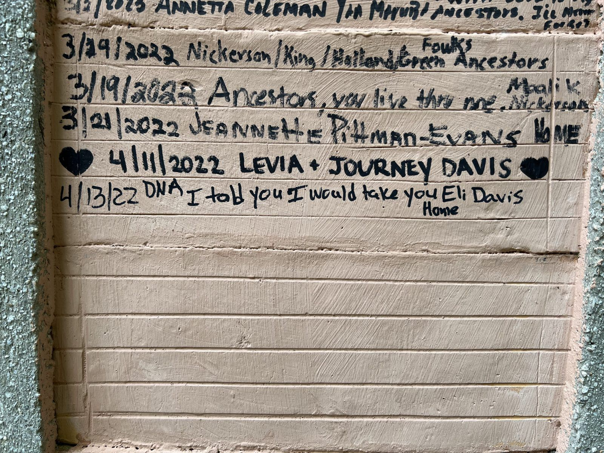
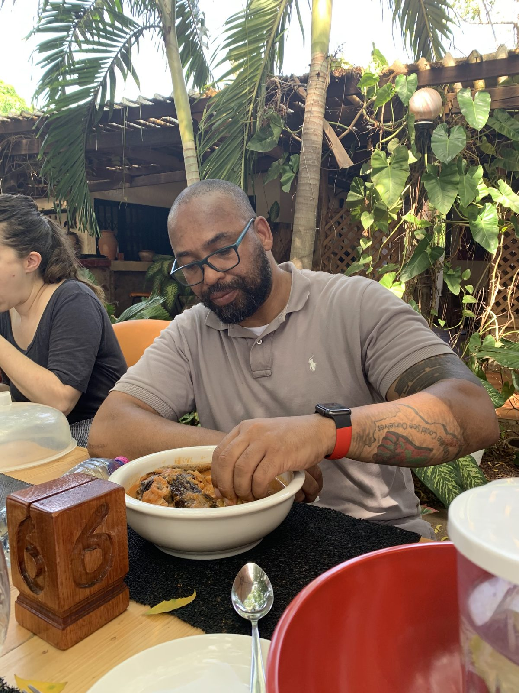

Eli M. Davis · Ph.D. Candidate (ABD) · Birmingham, Alabama
What's the story?
Everything I do asks that question.
I'm Eli M. Davis — a special-education teacher, a Ph.D. candidate (ABD) at the University of South Carolina, and the founder of 4 Black Centuries LLC. I study how environments write themselves into people, and I build the methods and tools that help education write restoration instead.


Milwaukee, 2014 — a summer unit I built for neurodivergent learners: a tent, a campfire, and a river of student artwork running through the classroom.

The unit, lived in — drums around the campfire.
The Educator
The classroom is my first laboratory
I have taught special education since 2008 — Wisconsin, North Carolina, South Carolina, and now Birmingham, Alabama — students the system was not designed to see, in buildings I have loved. Everything else on this page grew from that ground. The research questions came from my students before they came from the literature. The software I build exists because I watched good frameworks drown in paperwork while children waited. The classroom named me before the academy did: Teacher of the Year, Outstanding Teacher, a Harvard Race, Equity, and Leadership fellowship — each one earned at the front of a room.
In 2014, for a summer unit in Milwaukee, I turned a classroom into a campsite for neurodivergent learners — a real tent, a campfire, a painted river banked with their own artwork. A decade before I built software for families raising neurodivergent children, I built them a world. The instinct hasn't changed; only the materials have.
I've carried this work beyond my own classroom: piloting AI-supported modules with preservice teachers at Miles College, and speaking to educators about what epigenetics — understood conceptually, as the study of how experience and environment shape what gets expressed in a life — asks of the people who teach children carrying history in their bodies.
Excellence is the standard. Dignity is the floor.
The Scholar
Epigenetic Consciousness: how environments write people, and how education writes back
I am a Ph.D. candidate in Teaching and Learning at the University of South Carolina (comprehensive examinations passed with honors), advised by Dr. Gloria Boutté. My dissertation develops Epigenetic Consciousness (EC) — a framework introduced in a peer-reviewed article (Davis, 2025, Simon Fraser University Educational Review) arguing that environments — material, structural, relational, informational — write themselves into bodies and minds across generations, and that education can run that writing in both directions: it can harm, and it can restore. The framework stands on five literatures: sociogenesis, behavioral epigenetics, critical pedagogy, endarkened feminist epistemology, and African epistemology.
Epigenetic Consciousness
An awareness that the story written into a person is not fixed — and that classrooms, curricula, and relationships are among the writers. EC names both directions: the weathering and the restoration. The question it hands every educator is the one that drives all my work: what's the story?
Sociogenic Entropy
The wear that hostile social environments work on a people — understood not as destruction but as reformation. Nothing is lost; it reorganizes. Which means harm and healing are the same process running in opposite directions, and repair means reforming forward, not returning to a baseline that never existed.
Agentic Nkwaethnography
The research method I developed for the dissertation: an AI-mediated autoethnography in which the human narrates and the machine carries. It honors the endarkened feminist tradition it descends from while contributing what my comprehensive exams found missing from the educational literature — a fully developed Black male epistemology.
The Field
The research crosses water
This scholarship is not desk work. It has been carried — twice as a U.S. Department of Education Fulbright-Hays participant, to Nigeria in 2022 and Barbados in 2023; to Ghana, to the wall at Assin Manso; into archives of family and place; through a photographic record that now forms one of my dissertation's three operational layers. The framework was validated the way the tradition demands: in community, across continents, by elders and educators who recognized the story before I had the vocabulary for it.
That is what makes the work durable. The theory holds in a Birmingham hallway and in a classroom an ocean away, because it describes something older than either.

Assin Manso, Ghana — April 2022. In my hand, on the wall: "I told you I would take you home."
The AI Practice
The human narrates. The machine carries.
I don't just use AI — I built a research methodology on it, with sovereignty as the first principle. The intelligence directing the work is human; the machine extends its reach. That stance turns out to be exactly what schools, researchers, and organizations need as they decide what AI will be allowed to do.
Carrier-supervised AI
AI extrapolates; the human supervises with lived knowledge. My workflows catch machine drift with the body's record — and they're designed so anyone can replicate the discipline in their own domain.
One voice at machine scale
I developed a reproducible technique for keeping many parallel AI agents writing in a single human voice — assembled rules, definitions, and standards every agent loads before it works. The method is citable, teachable, and transfers to any organization's writing.
Sovereignty first
No person's private data leaves their hands. No machine interprets a child. The human stays the author of their own story. I help institutions adopt AI with those lines drawn in code, not just in policy.
The Builder
I ship what I theorize
The dissertation argues that research can live as working software. So mine does — and the company makes the same argument for schools.
GoodCatch →
A school behavior platform that makes recognition the path of least resistance — three-tap logging, restorative documentation that auto-generates district paperwork, and one-tap AI reports. Built by 4 Black Centuries LLC, piloting in Birmingham for 2026–27. Catch them being good.
Giovanna
An awareness companion for families raising neurodivergent children — log the hard moments when you think of them, watch the patterns emerge, and share clearer language with schools and therapists. Zero-knowledge encrypted: the family's data is unreadable to everyone but the family, including us. Parenting with confidence, not compliance.
The EC Research Platform
The dissertation's living artifact: an AI-driven research engine, a coded evidence database of 650+ entries, and a photographic archive spanning my teaching and travel across the diaspora. The findings aren't only written about the tool — they operate inside it.
NBPTS Living Evidence Repository
An AI-powered qualitative research dashboard supporting the National Board for Professional Teaching Standards' revision of the Literacy: Reading–Language Arts standards — focus-group transcripts in, coded themes and an auditable evidence trail out. Built with Dr. Teaira C. McMurtry (University of Alabama at Birmingham).
The Record
Selected publications, honors, and what's coming
Publications
Davis, E. (2025). Epigenetic consciousness: Understanding historical trauma, identity
formation, and the path to transformational healing.
Simon
Fraser University Educational Review, 17(1), 23–36.
Davis, E. (2024). Harnessing AI for educational frameworks: The
Basquiat Pedagogy Framework.
Equity & Access, American Consortium for Equity in Education.
Davis, E. (forthcoming). (Our)Story: African Diaspora Literacy as a healing and
restorative antidote to anti-Blackness. In J. Lyiscott (Ed.), Beacon Press.
Recognition
Fulbright-Hays Group Projects Abroad, U.S. Department of Education — Nigeria (2022) and Barbados (2023) · Excellence in Equity Award, American Consortium for Equity in Education (2024) · Fellow, Race, Equity, and Leadership in Schools, The Principals' Center, Harvard Graduate School of Education (2019) · Teacher of the Year, Lincoln Heights Academy (2018) · Outstanding Teacher, Hillside High School (2016).
Presentations
American Educational Research Association Annual Meeting — 2024 (Philadelphia) and 2025 (Denver, with Dr. Teaira C. McMurtry) · National Council for Black Studies (2019) · Guest lecture, School of Education, University of California, Riverside (2020) · AI prompt-engineering workshops for educators with CarolinaCAP and the South Carolina Alliance of Black School Educators (2024).
Books
The Carry — the book the dissertation is becoming: the story
of Epigenetic Consciousness written for every reader, not only the academy. The
framework, the archive, and the father-to-son inheritance that started it, carried
onto the page.
Also in preparation: a critical duoethnography on linguistic healing and Black
Language with Dr. Teaira C. McMurtry, and a chapter on Black Language and healing
co-authored with Dr. McMurtry and Dr. Gloria Boutté.
Work With Me
Speaking, professional development, and research consulting
I work with districts, universities, conferences, and foundations — from a single keynote to a season of professional development to advising a research or product team. The throughline is always the same: rigorous scholarship, working tools, and the question that opens people — what's the story?
AI with sovereignty
How educators and researchers can use AI at full power without surrendering authorship, privacy, or judgment.
Epigenetics & education
What the science of environment and expression — held conceptually, without overclaiming — asks of schools.
Positive-first behavior systems
Recognition-led, restorative, dignity-by-design alternatives to surveillance discipline — and the data to defend them.
Endarkened & Black male epistemologies
Research methods that honor where knowing comes from — for doctoral programs and methodologists.

Accra, 2022 — fish-stock pepper soup, eaten by hand, at the W. E. B. Du Bois House. I called it what it was: feeding ancestral DNA.
Get in touch
Bring the question to your people
If your school, university, or organization is working out what AI, behavior, or healing should look like in practice, I'd love to talk.
eli@4blackcenturies.com